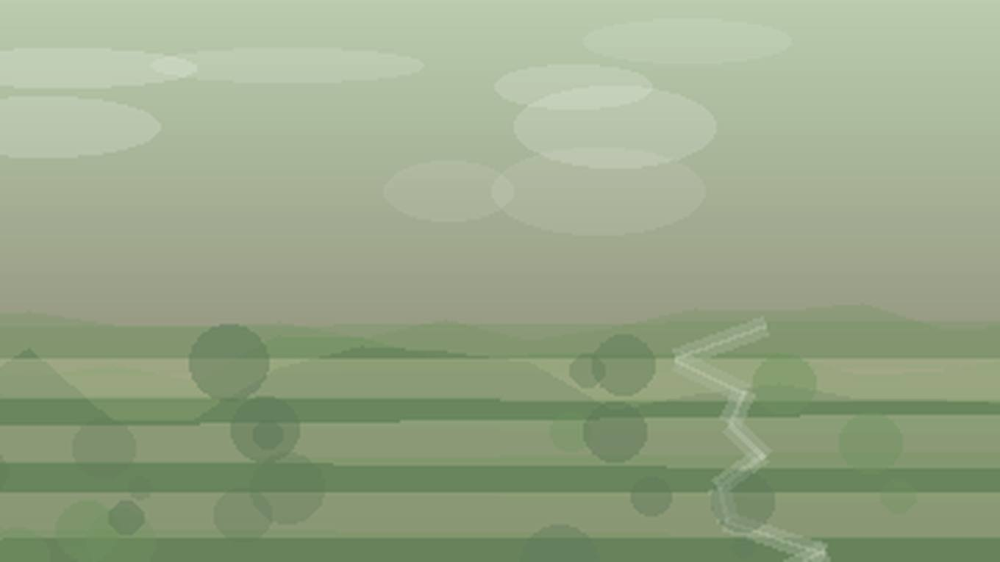

Главная / Республика Дагестан / приморская низменность

Республика Дагестан · приморская низменность
Что посадить
Что посадить
в зоне: приморская низменность
приморская низменность: прохладный влажный морской климат требует дренажа, укрытий и холодостойких культур. Ориентиры внутри зоны: Махачкала, Дербент, Каспийск.
Культуры и рекомендации
По умолчанию культуры отсортированы по надёжности: сначала надёжные, затем рекомендованные, с укрытием и рискованные. Сроки ориентировочные — уточняйте их по погоде конкретного сезона.
| Культура | Категория | Рекомендация | Где лучше | Сроки | Комментарий |
|---|---|---|---|---|---|
| Жимолостьягодный кустарник | Ягодные | Надёжно | Сад | Посадка: апрель или сентябрь. | Одна из лучших культур для холодных зон. Прохладное влажное лето делает особенно важными дренаж и укрытия. |
| Земляника садоваяягодная культура | Ягодные | Надёжно | Садовая гряда | Посадка: май или август. | Мульча и полив помогают получить ровный урожай. Прохладное влажное лето делает особенно важными дренаж и укрытия. |
| Кабачоктыквенная культура | Овощи | Надёжно | Открытый грунт | Посев или высадка: конец мая — июнь. | Лучше удаётся на тёплой плодородной гряде. Прохладное влажное лето делает особенно важными дренаж и укрытия. |
| Капуста белокочаннаяовощная культура | Овощи | Надёжно | Открытый грунт | Рассада: апрель–май; высадка: май–июнь. | Даёт стабильный урожай на влагоёмкой гряде. Прохладное влажное лето делает особенно важными дренаж и укрытия. |
| Картофельовощная культура | Овощи | Надёжно | Открытый грунт | Посадка: май; уборка: август–сентябрь. | Надёжная базовая культура при правильном сроке посадки. Прохладное влажное лето делает особенно важными дренаж и укрытия. |
| Морковькорнеплод | Овощи | Надёжно | Открытый грунт | Посев: апрель–май. | Лучше растёт на рыхлой гряде без пересыхания до всходов. Прохладное влажное лето делает особенно важными дренаж и укрытия. |
| Петрушкапряная зелень | Зелень | Надёжно | Открытый грунт | Посев: апрель–май. | Хорошо переносит прохладный старт. Прохладное влажное лето делает особенно важными дренаж и укрытия. |
| Редискорнеплод | Овощи | Надёжно | Открытый грунт | Посев: апрель–май, повторно — август. | Быстро даёт ранний урожай и подходит для повторных посевов. Прохладное влажное лето делает особенно важными дренаж и укрытия. |
| Салатлистовая зелень | Зелень | Надёжно | Открытый грунт | Посев: апрель–июль. | Подходит для ранних и повторных посевов. Прохладное влажное лето делает особенно важными дренаж и укрытия. |
| Свёклакорнеплод | Овощи | Надёжно | Открытый грунт | Посев: май. | Хорошо реагирует на прореживание и равномерную влажность. Прохладное влажное лето делает особенно важными дренаж и укрытия. |
| Смородина чёрнаяягодный кустарник | Ягодные | Надёжно | Сад | Посадка: апрель или сентябрь. | Хороша в прохладных и умеренно влажных садах. Прохладное влажное лето делает особенно важными дренаж и укрытия. |
| Укроппряная зелень | Зелень | Надёжно | Открытый грунт | Посев: апрель–июль. | Надёжная зелень для повторных посевов. Прохладное влажное лето делает особенно важными дренаж и укрытия. |
| Голубика садоваяягодный кустарник | Ягодные | Рекомендовано | Кислая гряда | Посадка: весна. | Требует кислой почвы и стабильной влаги. Прохладное влажное лето делает особенно важными дренаж и укрытия. |
| Крыжовникягодный кустарник | Ягодные | Рекомендовано | Сад | Посадка: апрель или сентябрь. | Нужны проветривание и защита от загущения. Прохладное влажное лето делает особенно важными дренаж и укрытия. |
| Малинаягодный кустарник | Ягодные | Рекомендовано | Сад | Посадка: апрель или сентябрь. | Нужны свет, мульча и обновление побегов. Прохладное влажное лето делает особенно важными дренаж и укрытия. |
| Огурецтеплолюбивый овощ | Овощи | Рекомендовано | Открытый грунт / укрытие | Рассада: май; высадка: конец мая — июнь. | Нужен тёплый старт и регулярный полив. Прохладное влажное лето делает особенно важными дренаж и укрытия. |
| Томаттеплолюбивый овощ | Овощи | Рекомендовано | Открытый грунт / теплица | Рассада: март–апрель; высадка: май–июнь. | Ранние сорта надёжнее, укрытие повышает стабильность. Прохладное влажное лето делает особенно важными дренаж и укрытия. |
| Яблоняплодовое дерево | Плодовые | Рекомендовано | Сад | Посадка: апрель или сентябрь. | Нужны районированные сорта и место без застоя холодного воздуха. Прохладное влажное лето делает особенно важными дренаж и укрытия. |
| Виноград укрывнойягодная лиана | Ягодные | С укрытием / уходом | Южный склон под укрытием | Посадка: май; укрытие — октябрь. | Ранние сорта требуют сухого зимнего укрытия. Прохладное влажное лето делает особенно важными дренаж и укрытия. |
| Перец сладкийтеплолюбивый овощ | Овощи | С укрытием / уходом | Теплица или тёплая гряда | Рассада: февраль–март; высадка: конец мая. | Лучше плодоносит при ровном тепле и защите от холода. Прохладное влажное лето делает особенно важными дренаж и укрытия. |
| Сливаплодовое дерево | Плодовые | С укрытием / уходом | Сад | Посадка: апрель или сентябрь. | Не любит сырых низин и подопревания. Прохладное влажное лето делает особенно важными дренаж и укрытия. |
| Тыкватыквенная культура | Овощи | С укрытием / уходом | Тёплая гряда | Посев или высадка: конец мая — июнь. | Длинный сезон и тёплая гряда заметно улучшают вызревание. Прохладное влажное лето делает особенно важными дренаж и укрытия. |
| Абрикосплодовое дерево | Плодовые | Рискованно | Экспериментальный сад | Посадка: весна. | Риск связан с зимами и возвратными заморозками. Прохладное влажное лето делает особенно важными дренаж и укрытия. |
| Арбузбахчевая культура | Бахчевые | Рискованно | Тёплая гряда / открытый грунт | Посев или рассада: май. | Нужны тепло, солнце и отсутствие холодного переувлажнения. Прохладное влажное лето делает особенно важными дренаж и укрытия. |
| Дынябахчевая культура | Бахчевые | Рискованно | Тёплая гряда / открытый грунт | Посев или рассада: май. | Лучше удаётся на лёгкой тёплой почве. Прохладное влажное лето делает особенно важными дренаж и укрытия. |
| Черешняплодовое дерево | Плодовые | Рискованно | Защищённый сад | Посадка: весна. | Нужен тёплый микроклимат и защита цветения. Прохладное влажное лето делает особенно важными дренаж и укрытия. |